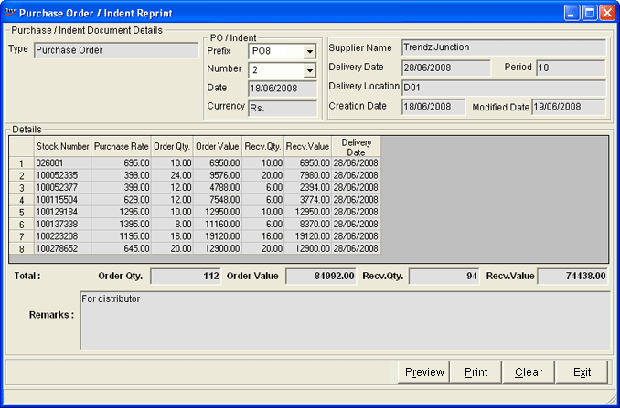

This option can be used in cases, when you need to print a purchase order even after sending it to the concerned supplier.
How to reach: Stock > Purchase Order > Reprint
The Purchase Order / Indent Reprint window is displayed.

Type: Displays the type of the document selected.
Prefix: Select the prefix of the document to be selected.
Number: Select the number of the document to be reprinted. The details of the documents are displayed in the rest of the fields.
Date: The date of purchase order is displayed.
Currency: The currency used in the Purchase Order is displayed.
Supplier Name: The supplier on whom the selected purchase order is generated is displayed.
Delivery Date: The due date for delivery of goods from the supplier.
Period: : The lead time to fulfil the order, as on the date of generation of the PO is displayed.
Delivery Location: The place where the items are proposed to be delivered is displayed.
Creation Date: The date on which the purchase order was created is displayed.
Modified Date: The date on which the purchase order was last modified is displayed. If there were no modifications, the date of creation is displayed here.
Details: The details of inventory ordered are displayed here.
Total:
Order Qty.: Total order quantity of all items in the PO is displayed.
Order Value: Total order value of all items in the PO is displayed.
Recv.Qty.: Total quantity of all items delivered so far against the PO is displayed.
Recv.Value: Total value of all items delivered so far against the PO is displayed.
Remarks: Enter comments, if any.